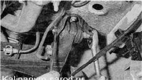
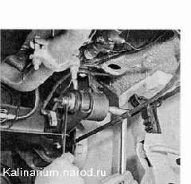
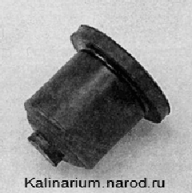
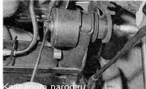

Балка задней подвески - замена сайлент-блокаДля замены сайлент-блока снятие балки с автомобиля не требуется. Сайлент-блоки меняем по очереди: сначала у одного, затем у другого рычага балки. Для выполнения работы потребуются: - подставка под автомобиль; — универсальный чашечный съемник. Снятие 1. Подготавливаем автомобиль к выполнению работ. 2. Устанавливаем автомобиль на надежную подставку и снимаем заднее левое колесо. 3. Отсоединяем упругий рычаг регулятора давления от серьги. 4. Освобождаем левый трос стояночного тормоза из двух кронштейнов крепления троса к левому рычагу задней подвески. 5. Торцовым ключом на 19 мм отворачиваем гайку болта крепления рычага к кронштейну кузова, удерживая болт накидным ключом на 19 мм. 6. Вынимаем болт. Оттягиваем рычаг вниз (не натягивая тормозной шланг) и устанавливаем чашку съемника с наружной стороны, а специальную шайбу с внутренней стороны рычага. 7. Вращая гайку болта съемника, выпрессовываем сайлент-блок в чашку. 
Сайлент-блок с одного края имеет упор, и поэтому выпрессовывать его следует только в сторону порога автомобиля. Установка 1. Наносим мыльный раствор на цилиндрическую поверхность нового сайлент-блока. 2. Устанавливаем чашку съемника с внутренней стороны рычага. 3. Вращая гайку болта съемника, запрессовываем новый сайлентблок в рычаг до упора. 
4. Устанавливаем рычаг в кронштейн кузова и фиксируем его болтом с гайкой, не затягивая ее. Болт крепления рычага вставляется в кронштейн кузова со стороны порога автомобиля. 5. Вставляем в серьгу упругий рычаг регулятора давления и фиксируем его стопором. 6. Закрепляем в кронштейнах трос ручного тормоза. 7. Устанавливаем колесо и снимаем автомобиль с подставок. 8. Несколько раз нажимаем на заднюю часть автомобиля для самоустановки подвески. 9. Окончательно затягиваем гайку болта крепления рычага моментом 66,6-82,3 Н-м (6,8-8,4 кгс-м). 10. Сайлент-блок второго рычага заменяем аналогично. |